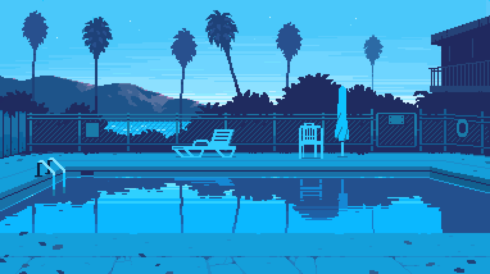
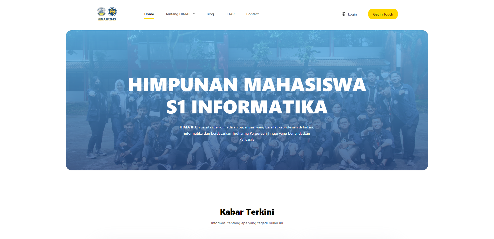
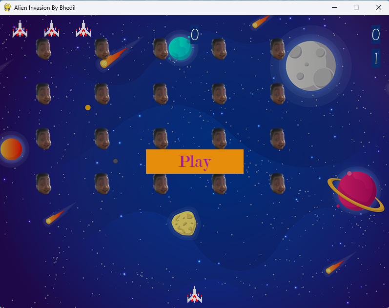

Biografi

Perkenalkan namaku Aidil Arifin Nizar merupakan mahasiswa S1 Informatika Telkom University angkatan 2020. Disini aku mau kasitau sekilas mengenai diriku, dari awal aja kali ya hehe. Jadi, aku lahir di Jambi pada tanggal 25 Februari 2002 tetapi aku cuma numpang lahir aja disana selama 1 tahun terus aku baru deh pindah ke Bekasi sampai aku dewasa. Eh, tetapi ada kejadian yang tidak terekspetasi yaitu saat aku mau masuk ke masa SMA, aku disuruh untuk mengikuti ayahku ke Aceh untuk menemani dia. Setelah itu, selama 2 tahun aku menghabiskan masa SMA ku disana. Baru deh, abis itu saat kelas 12 SMA aku pindah lagi ke Bekasi dikarenakan ayahku sudah selesai melakukan pekerjaannya disana. Setelah lulus SMA, aku masuk Telkom University dikarenakan tidak lolos jalur snmptn dan sbmptn😅.
Aku masuk jurusan Informatika dikarenakan aku melakukan riset mengenai gaji pekerjaan tertinggi di dunia (ini bukanlah strategi yang bagus😭) yaitu data scientist. Eh, akhirnya kena humble deh😂. Tapi gapapa, selama menghadapi dunia perkodingan sering trial and error membuatku jadi bisa problem solving.
Sosial Media
Kalian dapat melihat dan mengenalku lebih dalam dengan mengikuti akun media sosial yang aku lampirkan.
Portofolio
Di bagian ini, akan ada beberapa hasil portofolio yang terlampir
Website HIMAIF Telkom

Aku berkesempatan untuk bergabung dengan organisasi HIMAIF dengan berkontribusi mengembangkan Website menggunakan CMS (Content Management System) yaitu Wordpress. Website ini menggunakan Niagahoster dan beberapa plugin seperti elementor untuk membangun FE dan BE, SiteKit by Google, menggunakan Blocksy sebagai tema, dll. Website ini dapat dilihat pada domain tersebut Website Himaif.
Alien Invasion

Proyek ini merupakan salah satu tugas besar kuliah menggunakan bahasa pemrograman python dengan library pygame. Proyek game ini dinamakan alien invasion yang dimana kita sebagai player yang dilambangkan dengan spaceship harus membasmi alien yang dilambangkan dengan mukaku sendiri😂. Player diberikan 3 nyawa (kesempatan) untuk membasmi alien (mendapatkan score sebanyak mungkin).
Github
Selanjutnya kalian bisa melihat lebih banyak portofolio yang sudah aku buat di repository github.